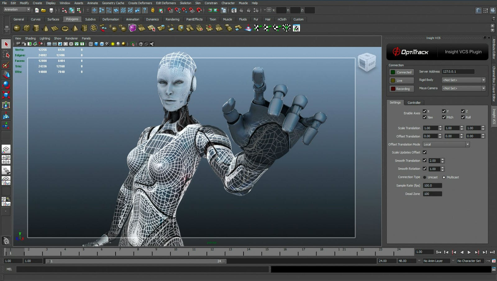
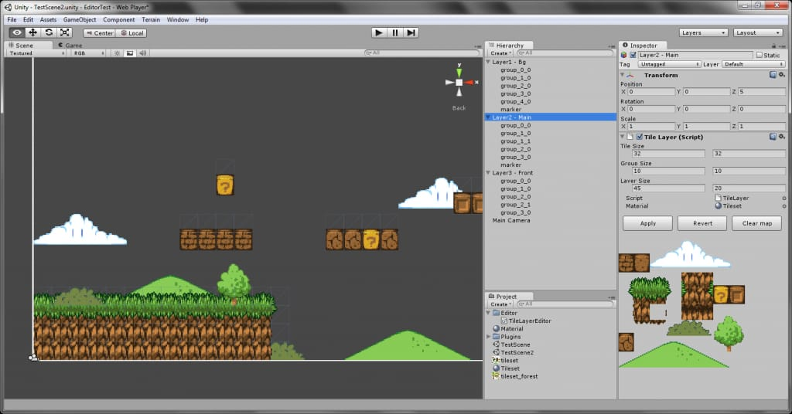
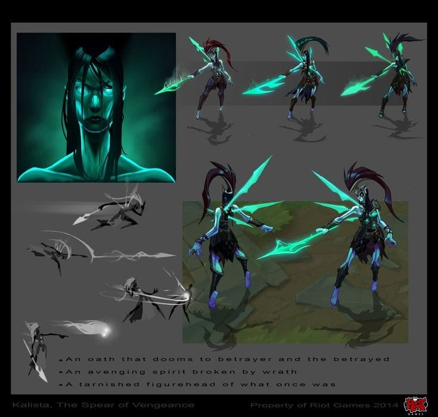
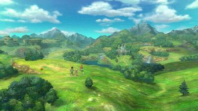

En esta galería podrás ver ejemplos de los diferentes tipos de gráficos que se usan en el desarrollo de videojuegos:
   Las imágenes muestran desde gráficos en 2D estilo pixel art, hasta complejos gráficos en 3D utilizados en videojuegos de última generación.